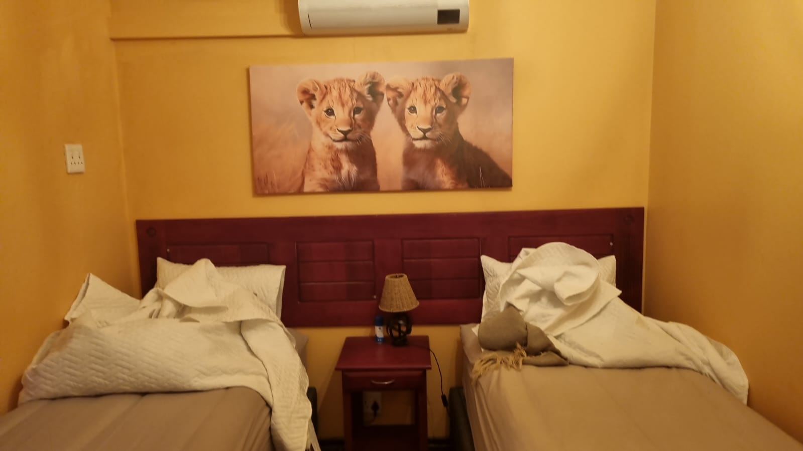
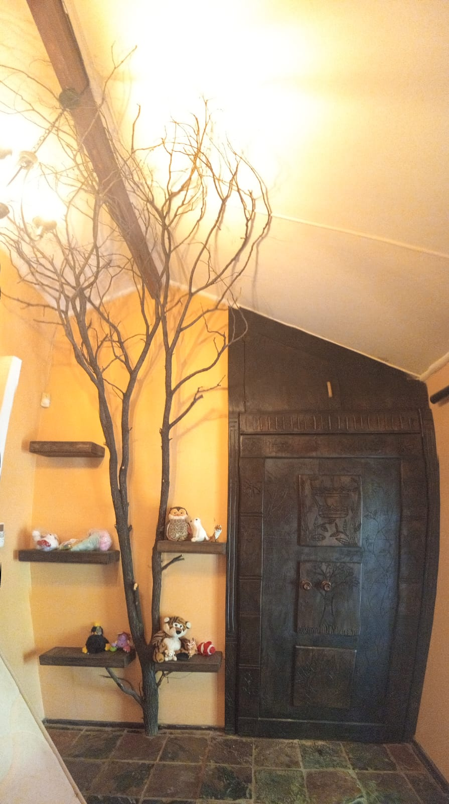
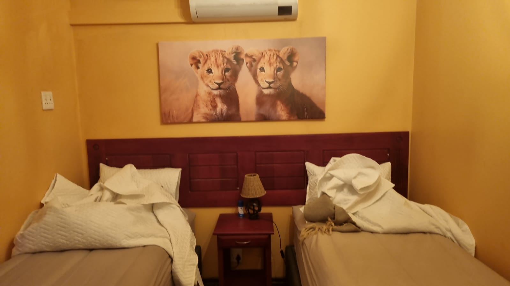
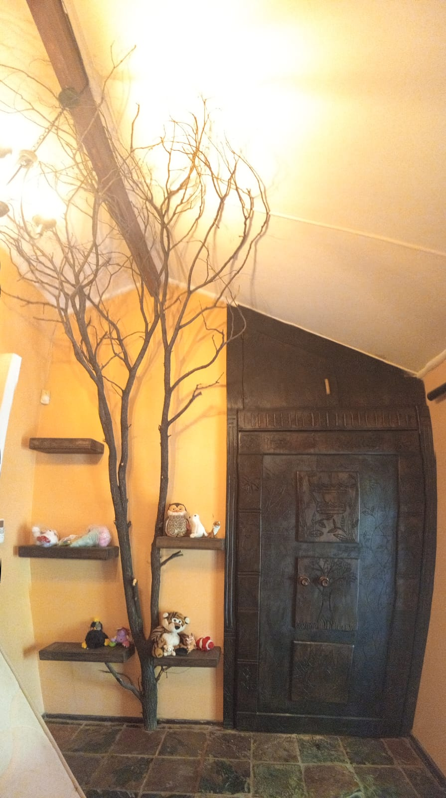

Lion & Cubs Suite
The suite begins in the Cubs’ Room, a space alive with imagination and gentle joy. Soft colors, playful details, and cozy corners create a world designed for curiosity and comfort. It is a place where stories begin, where laughter lingers, and where young spirits feel safe enough to explore and dream freely. Set quietly against the wall stands an inviting wardrobe—unassuming at first glance, yet filled with promise. When opened, it reveals a hidden passage beyond hanging coats and wooden panels. Stepping through feels like crossing into a secret story, a moment of wonder where imagination takes the lead and the world gently shifts. On the other side of the wardrobe lies the Lion Room, warm and commanding in its calm elegance. Golden tones, layered textures, and refined details reflect strength, protection, and quiet confidence. This is a space that feels grounded and watchful, offering rest beneath a sense of guardianship and serene authority. Together, the rooms tell a story of growth and connection—of innocence leading into strength, of curiosity guided by courage. This suite is more than a place to stay; it is a shared journey, woven with imagination, comfort, and a touch of hidden magic.
Room Details
Capacity: 4 people
Includes:
- Two separate bedrooms Lion room with luxurious king sized bed and Cubs room with two separate comfortable beds
- Private lounge with minibar, tea coffee/facilities, smart tv and wifi access
- Air conditioning in the Lion room
- Private bathroom
 


